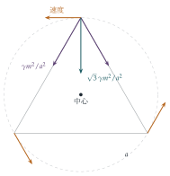

STEP I 1999、第11問
先に進む前に問題を読んでおこう。問題は STEP Support Programme の問題データベースにある： step.maths.org/questions/99-s1-q11
導入
重力で引き合う2つの物体の運動は、ニュートン（Newton）が示し、第 10.6 節 で説明したとおり、完全に解くことができる。各物体は共通の重心（centre of mass）のまわりを円錐曲線（conic）を描いて運動する。互いに束縛されていれば楕円（ellipse）、互いから脱出するのに十分なエネルギーをもっていれば放物線（parabola）または双曲線（hyperbola）である。ところが、3つ目の物体を加えるとすべてが変わる。三体問題（three-body problem）には、よく知られた関数で表される一般解が存在しない。さらに1890年、ポアンカレ（Henri Poincaré）は、その解がカオス的（chaotic）になりうることを発見した。これが数学におけるカオスの最初の登場である。
それでも、特殊な解の中には完全に単純なものもある。1772年、ラグランジュ（Joseph-Louis Lagrange）は、正三角形の頂点に置かれた3つの物体が、三角形が車輪のように回るかたちで剛体的に回転しうることを見いだした。この問題では、質量が等しい場合についてその解を求める。ラグランジュの三角形は単なる珍しい現象ではない。太陽、木星、そして何千もの「トロヤ群」（Trojan）小惑星がまさにこの配置をなしており、今日では宇宙望遠鏡も同様の点に配置されている。
取りかかる前に
星が角速度（angular velocity）\(\omega\) で半径 \(R\) の円周上を運動するためには、星にはたらく力の合計はどのようでなければならないか。
その大きさは \(m\omega^2R\) で、向きは円の中心を向いていなければならない。したがって、各星にはたらく重力の合計が三角形の中心を向いていることを確かめ、その大きさをちょうどよくする \(\omega\) を求めればよい。
順を追って解く
段階 1 幾何
1辺の長さが \(a\) の正三角形の各頂点は、中心からどれだけ離れているか。
中心は各中線（median）上にあり、頂点から中線の長さの3分の2の位置にある。中線の長さは \(a\sin 60^\circ = \frac{\sqrt3}{2}a\) であるから、各頂点から中心までの距離は \[R = \frac23\cdot\frac{\sqrt3}{2}a = \frac{a}{\sqrt3}.\] である。対称性より、三角形の中心は3つの等しい質量の星の重心である。
段階 2 1つの星にはたらく力
他の2つの星はそれぞれ大きさ \(\frac{\gamma m^2}{a^2}\) の力で引く。2つの引力のなす角はいくらか。それらの合力（resultant）は何であり、どの向きを向くか。
2つの引力は、その星で交わる三角形の2辺に沿った向きであるから、なす角は \(60^\circ\) である。対称性より、合力はこの角の二等分線（bisector）上にあり、二等分線は中心を通る。各引力は二等分線と \(30^\circ\) の角をなすので、合力の大きさは \[2\cdot\frac{\gamma m^2}{a^2}\cos 30^\circ = \frac{\sqrt3\,\gamma m^2}{a^2},\] であり、向きは中心を向く（図 10.8.1）。
段階 3 角速度
合力を \(m\omega^2R\) に等しいとおくと \[m\omega^2\frac{a}{\sqrt3} = \frac{\sqrt3\,\gamma m^2}{a^2}, \qquad\text{よって}\qquad \omega^2 = \frac{3\gamma m}{a^3}.\] この角速度のもとでは、同じ計算が（対称性により）各星に当てはまるので、3つの星はすべて中心のまわりを円運動し、三角形は剛体的に保たれる。■
段階 4 中心に置かれた4つ目の星
中心に置かれた質量 \(\lambda m\) の星は、各頂点から距離 \(\frac{a}{\sqrt3}\) にある。この星は頂点にある各星にどのような追加の力を及ぼすか。重心は動くか。中心の星には正味の力がはたらくか。
中心の星は重心を変えず、また対称性によりこの星が受ける3つの引力は打ち消し合うので、この星は静止したままである。中心の星は頂点にある各星を、大きさ \(\frac{\gamma\lambda m^2}{(a/\sqrt3)^2} = \frac{3\gamma\lambda m^2}{a^2}\) の力で中心に向かって引く。頂点の星にはたらく内向きの力の合計は \((\sqrt3 + 3\lambda)\frac{\gamma m^2}{a^2}\) となるので \[m\omega^2\frac{a}{\sqrt3} = (\sqrt3 + 3\lambda)\frac{\gamma m^2}{a^2}, \qquad \omega^2 = \frac{(3 + 3\sqrt3\,\lambda)\gamma m}{a^3} = \frac{3\gamma m}{a^3}\bigl(1 + \sqrt3\,\lambda\bigr). \qed\]

振り返り
対称な解を推測する。三体問題を解いたわけではない。対称性の高い運動を推測し、それがニュートンの法則で許されることを確かめたのである。
対称性が向きを決める。合力は二等分線上になければならなかったので、計算が必要なのはその大きさだけであった。
すべての物体を確かめる。対称性により、1つの星を確かめれば3つすべてを確かめたことになった。中心の星には別の（簡単な）確認が必要であった。
背後にある数学
姿を変えたケプラーの法則
答えを \(\omega^2a^3 = \gamma(3m)\) と書いてみよう。距離 \(a\) だけ離れて円軌道を描く2つの物体については、ケプラーの第3法則（Kepler’s third law、第 10.6 節 の演習問題）により \(\omega^2a^3 = \gamma(m_1 + m_2)\) が成り立つ。右辺に現れるのは全質量である。3つの星も、全質量を \(3m\) として同じ法則に従う。実際ラグランジュは、正三角形解が等しい質量の場合に限らず任意の3つの質量に対して存在することを示した。三角形は重心のまわりを \(\omega^2a^3 = \gamma(m_1 + m_2 + m_3)\) を満たして回転する。その数年前にはオイラー（Euler）が、3つの物体が回転する1本の直線上に並ぶ別の解の族を見いだしていた。これら5つの配置（ラベルの付け方の違いを除いて、一直線上のものが3つ、三角形のものが2つ）が、3つの物体が同じ形を保つ唯一の配置である。
ラグランジュ点
\(m_1\) を太陽、\(m_2\) を惑星、\(m_3\) をごく小さな小惑星としよう。正三角形解によれば、小惑星は太陽と惑星とともに正三角形をなす第3の頂点、すなわち軌道上で惑星の前方または後方に位置することができる。これらがラグランジュ点（Lagrange points）\(L_4\) と \(L_5\) であり、オイラーの一直線上の解からは \(L_1\)、\(L_2\)、\(L_3\) が得られる。木星には、その \(L_4\) 点と \(L_5\) 点の周辺に集まる「トロヤ群」小惑星が1万個以上知られている。ジェームズ・ウェッブ宇宙望遠鏡（James Webb Space Telescope）は、地球から \(1.5\) 百万 km 先にある太陽–地球系の \(L_2\) 点の近くを周回しており、そこでは太陽、地球、月をすべて日よけの背後に保つことができる。
安定性
スターメイカーたちの三角形は長続きするだろうか。質量が等しい場合は、続かない。ごくわずかな乱れが成長し、星々は飛び散るか衝突する。ラウス（Edward Routh）は1875年、ラグランジュの三角形が安定（stable）であるのは1つの質量が支配的な場合に限ること、正確には \[27(m_1m_2 + m_2m_3 + m_3m_1) < (m_1 + m_2 + m_3)^2.\] が成り立つときに限ることを示した。太陽と木星についてはこれが余裕をもって成り立ち、それゆえトロヤ群は生き残っている。3つの等しい質量では \(27 \times 3m^2 > 9m^2\) であるから、この配置は不安定である。
1887年、スウェーデン国王オスカル2世（Oscar II）は、多体問題の解に対して懸賞を設けた。1889年、ポアンカレは三体問題に関する長大な論文でこの賞を得たが、論文の印刷中に編集者が議論の欠陥を見つけた。それを修正する過程で、ポアンカレは、ある解が「あまりに驚くべき複雑さで、図を描こうと試みることさえできない」ふるまいをすることを発見した。これがカオスの最初の一端である。印刷済みの冊子は回収されて廃棄され、その費用はポアンカレが負担した。新しい特殊解は今なお見つかり続けている。1993年に Cristopher Moore が数値的に発見し、2000年に Alain Chenciner と Richard Montgomery が証明したように、3つの等しい質量は8の字形の曲線上を互いに追いかけ合うことができる。その後、計算機によって何千もの周期軌道（periodic orbit）が新たに見つかっている。
思考のスキル
問題が難しすぎて一般には解けないときは、できるだけ対称性の高い解を探そう。対称な推測によって多くの未知数が1つか2つに減り、その確認はしばしば容易である。
これは数学と物理学における強力な戦略である。対称な平衡状態、定常状態、進行波、剛体的に回転する配置は、多くの場合最初に見つかる解であり、残りの解を調べる出発点となる。そして次に問うべきは常に、その対称な解が安定かどうかである。
次の一歩
正方形に並んだ4つの星。質量 \(m\) の4つの星が1辺 \(a\) の正方形の頂点に置かれている。これらが \(\omega^2 = \frac{(4 + \sqrt2)\gamma m}{2a^3}\) で中心のまわりを剛体的に回転しうることを示せ。
2つの等しい星と1つの惑星。質量 \(M\) の2つの星が距離 \(a\) だけ離れて、重心のまわりを周回している。質量の無視できる惑星が中心にある。この惑星は平衡（equilibrium）状態にあるか。2つの星を結ぶ直線に沿った微小な変位に対して安定か。その直線に垂直な変位に対してはどうか。
等しくない質量。質量 \(m_1\)、\(m_2\)、\(m_3\) の3つの星が1辺 \(a\) の正三角形の頂点にあり、重心 \(G\) のまわりを回転している。\(m_1\) の位置を \(P_1\) とするとき、\(m_1\) にはたらく重力が \(\frac{\gamma m_1(m_1 + m_2 + m_3)}{a^3}\,\overrightarrow{P_1G}\) であることを示せ（ヒント：力をベクトルで表し、重心の定義を用いよ）。これからラグランジュの結果を導け。
\(n\) 個の星。\(n\) 個の等しい星が、半径 \(R\) の円に内接する正 \(n\) 角形の頂点にある。剛体的な回転に対する \(\omega^2\) を、\(\frac{1}{\sin(k\pi/n)}\) の \(k\) についての和として求めよ。
さらに学ぶために
June Barrow-Green, Poincaré and the Three Body Problem（American Mathematical Society）。懸賞の経緯と、ポアンカレによるカオスの発見の物語。
Richard Montgomery, 「A new solution to the three-body problem」, Notices of the American Mathematical Society 48 (2001)。発見者の1人による8の字解の解説。オンラインで無料で読める。
Florin Diacu & Philip Holmes, Celestial Encounters（Princeton University Press）。三体問題とカオスの一般向けの歴史。